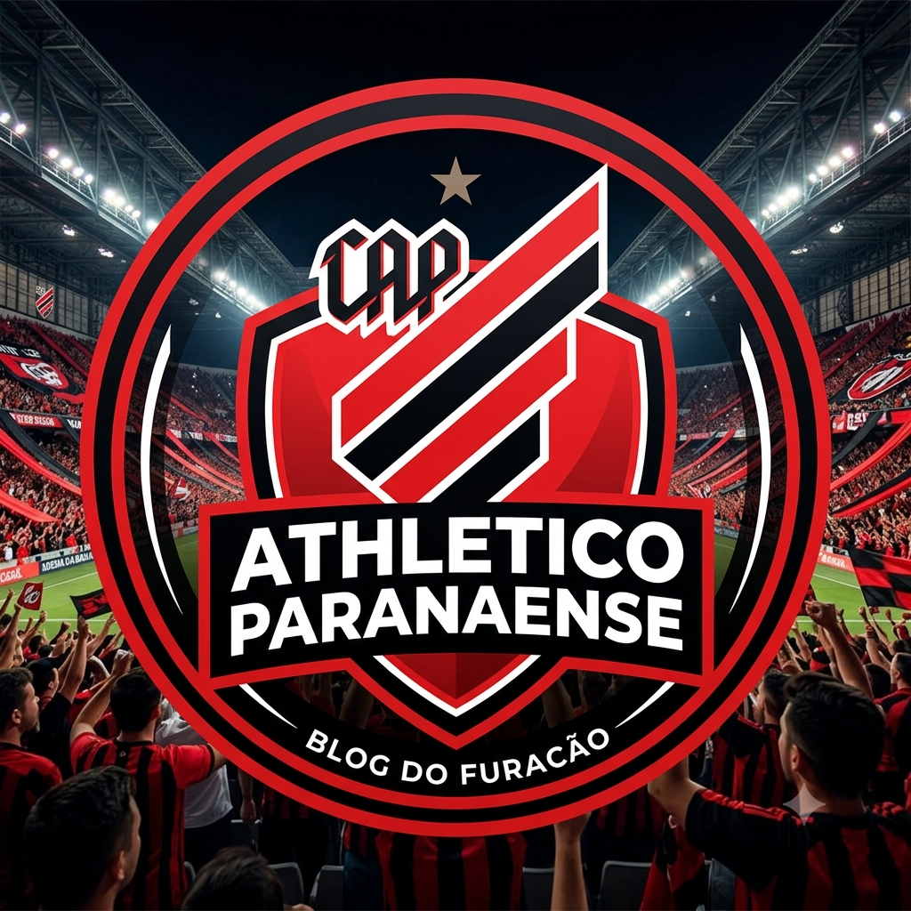

Meu primeiro post
Por:Renan victor
Boas-vindas ao meu novo blog! Aqui vou compartilhar dIcas de programaçao e curiosidade de fatos e do time athetico paranaense.

Por:Renan victor
Boas-vindas ao meu novo blog! Aqui vou compartilhar dIcas de programaçao e curiosidade de fatos e do time athetico paranaense.